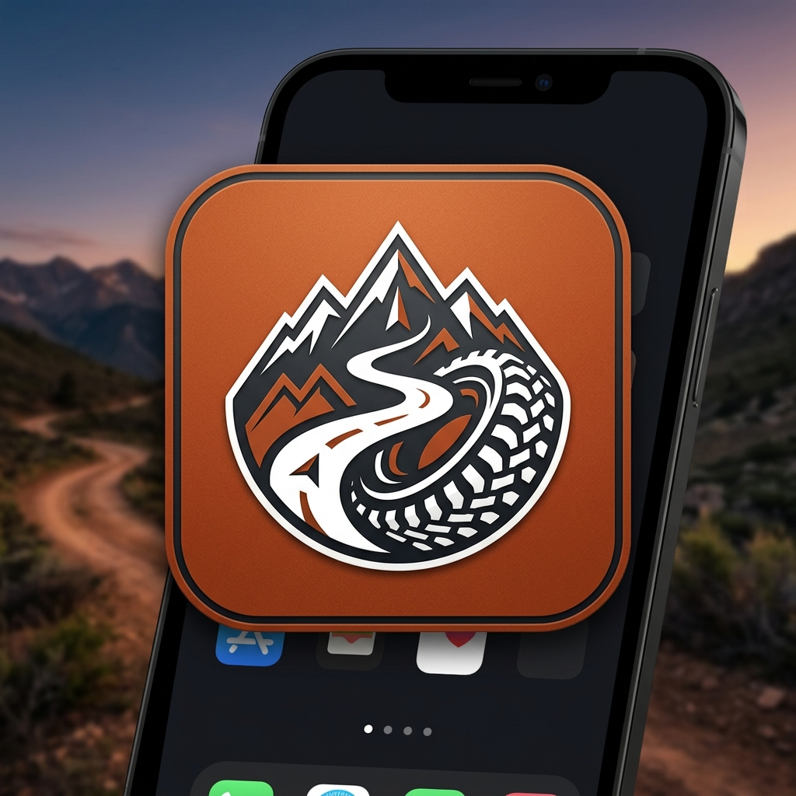

Digital roadbooks for your adventures
Build a roadbook from a GPX, follow it with GPS and share it. 4x4, moto, bike, running… any adventure.

Everything you need
Record route
Record live with GPS, dropping waypoints as you go, add Way points with voice recognition.
Editor
Build a roadbook from a GPX, Design each note with rally standards.
Roadbook reader
Navigate with odometer, bearing, a live map and the CAP direction bar.
Tripmaster
A precise GPS odometer with no roadbook — partial and total distance.
Validate & QR
Validate notes (manual or automatic) and emit a signed result QR.
Ranking
Scan QRs and build accuracy, CAP, speed and regularity rankings.
Accounts & sharing
Sign in to store roadbooks and publish them as public challenges.
Install it on any device
Every feature of RDBK.app is also available as a free, installable web app (PWA) — on Windows and Mac computers, Android and iOS. No app store needed: add it to your home screen and use it like a native app, even offline.
Public Challenges
Loading challenges…